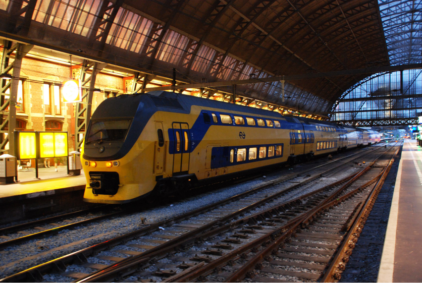

Из аэропорта Схипхол в Амстердам: как добраться самостоятельно?
Из аэропорта Схипхол до Амстердама можно доехать на поезде, автобусе или такси. Также вы можете арендовать авто без водителя. Длительность поездки на поезде составляет 17 минут, ее стоимость — от 4,2 евро. Путешествие на автобусе продлится 30 минут, цена билета — 5 евро. Такси довезет вас за 25 минут, стоимость услуги составит минимум 52 евро. Расстояние между аэропортом Схипхол и Амстердамом — 18 км.
Время поездки на автобусе может увеличиться до 1 часа из-за пробок на дороге. Из аэропорта в разных направлениях отправляется очень много автобусов, но найти нужный маршрут не проблема: на остановке есть электронное табло, где указан номер автобуса и его расписание. До Центрального вокзала не получится добраться на автобусе, зато это можно сделать на поезде. Автоматы по продаже билетов на поезд принимают только пластиковые карты и монеты. В кассе такой билет обойдется на 1 евро дороже, чем в автомате или онлайн. Бывает, что поезда не ходят из-за ремонта на дорогах, поэтому перед поездкой стоит свериться с расписанием на сайте Голландских железных дорог.
Автобус
Из аэропорта Схипхол до Амстердама можно доехать на поезде, автобусе или такси. Также вы можете арендовать авто без водителя. Длительность поездки на поезде составляет 17 минут, ее стоимость — от 4,2 евро. Путешествие на автобусе продлится 30 минут, цена билета — 5 евро. Такси довезет вас за 25 минут, стоимость услуги составит минимум 52 евро. Расстояние между аэропортом Схипхол и Амстердамом — 18 км.
Троллейбус
Из аэропорта Схипхол до Амстердама можно доехать на поезде, автобусе или такси. Также вы можете арендовать авто без водителя. Длительность поездки на поезде составляет 17 минут, ее стоимость — от 4,2 евро. Путешествие на автобусе продлится 30 минут, цена билета — 5 евро. Такси довезет вас за 25 минут, стоимость услуги составит минимум 52 евро. Расстояние между аэропортом Схипхол и Амстердамом — 18 км.
Такси
Из аэропорта Схипхол до Амстердама можно доехать на поезде, автобусе или такси. Также вы можете арендовать авто без водителя. Длительность поездки на поезде составляет 17 минут, ее стоимость — от 4,2 евро. Путешествие на автобусе продлится 30 минут, цена билета — 5 евро. Такси довезет вас за 25 минут, стоимость услуги составит минимум 52 евро. Расстояние между аэропортом Схипхол и Амстердамом — 18 км.
Заказать таксиАренда авто
Из аэропорта Схипхол до Амстердама можно доехать на поезде, автобусе или такси. Также вы можете арендовать авто без водителя. Длительность поездки на поезде составляет 17 минут, ее стоимость — от 4,2 евро. Путешествие на автобусе продлится 30 минут, цена билета — 5 евро. Такси довезет вас за 25 минут, стоимость услуги составит минимум 52 евро. Расстояние между аэропортом Схипхол и Амстердамом — 18 км.
Арендовать автоПопутчик
Из аэропорта Схипхол до Амстердама можно доехать на поезде, автобусе или такси. Также вы можете арендовать авто без водителя. Длительность поездки на поезде составляет 17 минут, ее стоимость — от 4,2 евро. Путешествие на автобусе продлится 30 минут, цена билета — 5 евро. Такси довезет вас за 25 минут, стоимость услуги составит минимум 52 евро. Расстояние между аэропортом Схипхол и Амстердамом — 18 км.
Уехать с попутчикомЭлектричка
Из аэропорта Схипхол до Амстердама можно доехать на поезде, автобусе или такси. Также вы можете арендовать авто без водителя. Длительность поездки на поезде составляет 17 минут, ее стоимость — от 4,2 евро. Путешествие на автобусе продлится 30 минут, цена билета — 5 евро. Такси довезет вас за 25 минут, стоимость услуги составит минимум 52 евро. Расстояние между аэропортом Схипхол и Амстердамом — 18 км.
Поезд аэропорт Схипхол — Амстердам

Поезд из аэропорта Схипхол в Амстердам курсирует круглосуточно. Длительность поездки составит 17 минут, стоимость билета — от 4,2 евро. Билеты можно приобрести онлайн на сайте Голландских железных дорог, в кассе или в специальных сине-желтых автоматах на вокзале.